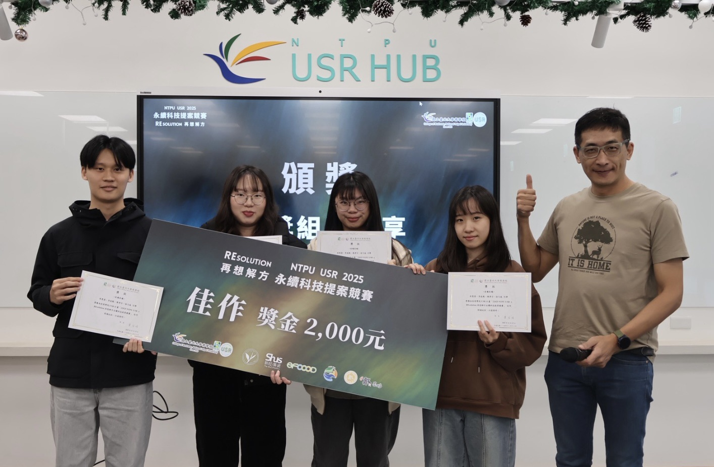
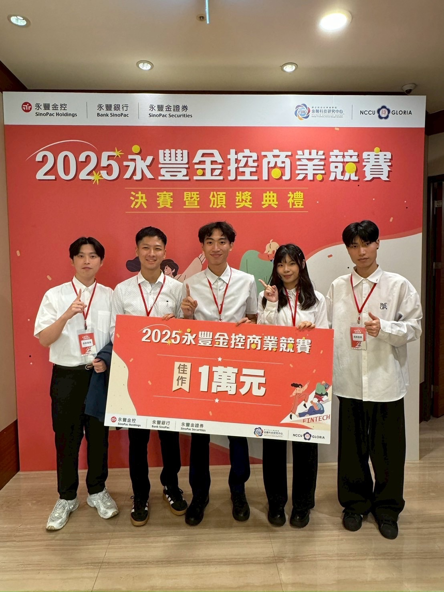
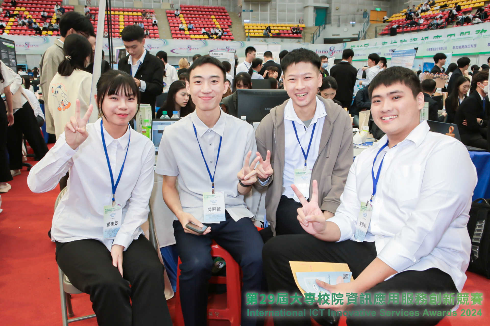

// 學歷
學歷
2025 – 2027
國立臺北大學
資訊管理研究所 · 碩士班在學中
2021 – 2025
東吳大學
資訊管理學系 學士 · 雙主修 經濟學系
// WORK EXPERIENCE
工作經驗
2025 – 至今
新創產學發展中心 · 工讀生
國立臺北大學
- 撰寫推動創新創業之計畫書，將產學合作意向轉化為具體執行方案
- 協辦臺北聯合大學系統「人工智慧代理創新創業跨域競賽」，負責賽程規劃與行政協調
// PROJECTS
專案經歷
2026
RefCheck 假文獻偵測系統
AI 假文獻偵測與文獻引用驗證系統
- 協助開發假文獻偵測系統，協助使用者辨識可能不存在或無法驗證的學術文獻
- 聚焦 AI 輔助文獻查核的準確性與使用便利性，提升學術研究中的文獻驗證效率
// COMPETITIONS
參賽經歷
2025
NTPU USR 永續科技提案競賽 入圍決賽 · 佳作
主題：REsolution 再想解方
- 針對永續科技議題進行問題分析與使用者行為觀察，將概念轉化為可執行方案
- 整理資料並設計溝通方式，與團隊完成簡報與成果發表

2025
第四屆永豐金控校園商業競賽 入圍決賽 · 佳作
個人化人工智慧財務規劃之分析與應用
- 規劃結合 Open Banking API 與機器學習的 AI 財務助理
- 執行市場分析與用戶研究，規劃產品功能與開發路徑

2024
第29屆大專校院資訊應用服務創新競賽 入圍決賽
主題：疲勞雷達 — AI 讀懂你的臉
- 以 .NET MAUI 開發前端使用者介面，設計跨平台 App
- 擔任系統分析角色，釐清使用者需求並轉化為具體設計與實作
